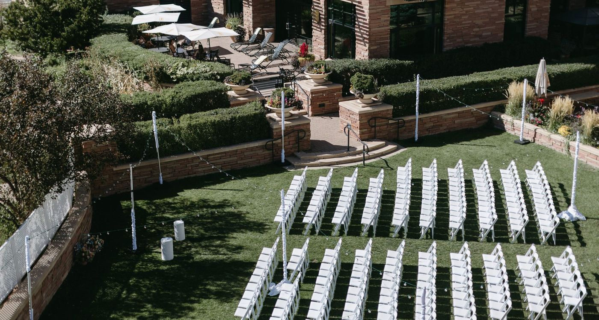
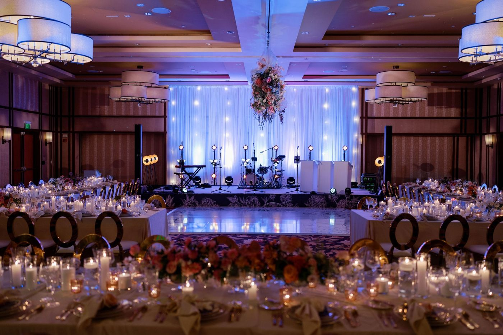
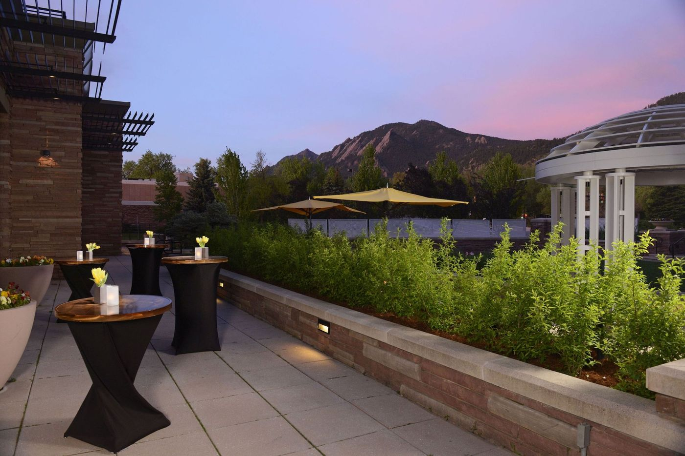

The lawn
The lawn is about 2,400 sq ft of grass with views of the Flatirons, for banquets of up to 200 and receptions of up to 275.
BOOK LIVE MUSIC IN COLORADO
Wedding and event music at a Boulder hotel
St Julien is in downtown Boulder, a block off Pearl Street, and its lawn and terraces look straight up at the Flatirons.
Live music is part of the hotel already. There are bands on the terrace from Wednesday to Saturday, and jazz at the holiday buffets.
Trusted and booked by

The lawn is about 2,400 sq ft of grass with views of the Flatirons, for banquets of up to 200 and receptions of up to 275.

The Xanadu Ballroom is about 4,100 sq ft with 14-foot ceilings, for banquets of up to 300 and receptions of up to 360. It divides into three, and there’s about 2,900 sq ft of pre-function space outside.

The Redgarden Lower Terrace holds dinners of up to 80, and the Redgarden Court and Upper Terrace hold receptions of up to 100 and 75.
Our pick
René Moffatt’s folk and Americana on the Redgarden terraces, for a small reception.
Private events of up to 140
Jill’s, the hotel’s restaurant, holds private events of up to 140, and the Honey Onyx Room holds up to 40.
“[He] recently played for my wedding ceremony, and I couldn’t be happier or more grateful. He is extremely talented and so sweet, my guests and I loved him!! He played ‘Bless the Telephone’ by Labi Siffre while I walked down the aisle and it was a dream. I would hire him 1000 times over.”

The ceremony
The lawn
Classical Strings
A violinist for the ceremony on the lawn.

The cocktail hour
The Redgarden terraces
Emily Barnes
Emily Barnes on the Redgarden terraces, with Joni Mitchell and Fleetwood Mac alongside her own songs.

The reception
The Xanadu Ballroom
Little Moses Jones
Little Moses Jones for the reception in the Xanadu Ballroom.
Want some more ideas? Check out live music for a Boulder wedding.

The holiday party
The Xanadu Ballroom
Soul and R&B Band
A soul band for the company holiday party in the Xanadu Ballroom.

The client dinner
Jill’s
Solo Guitarist
A solo guitarist for a client dinner at Jill’s.
The summer party
The lawn
Americana Band
The Americana band for a summer party on the lawn.
We also have ideas for company holiday parties and other corporate events. We also wrote about what Boulder sounds like.